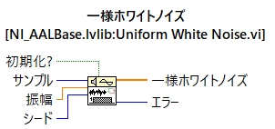
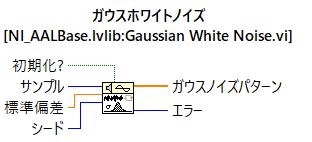
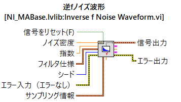
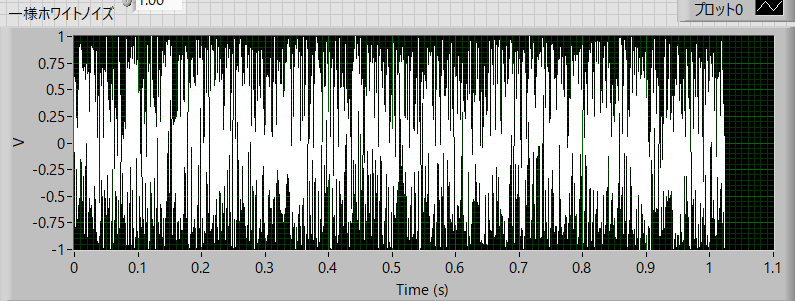
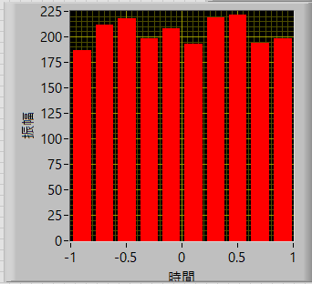
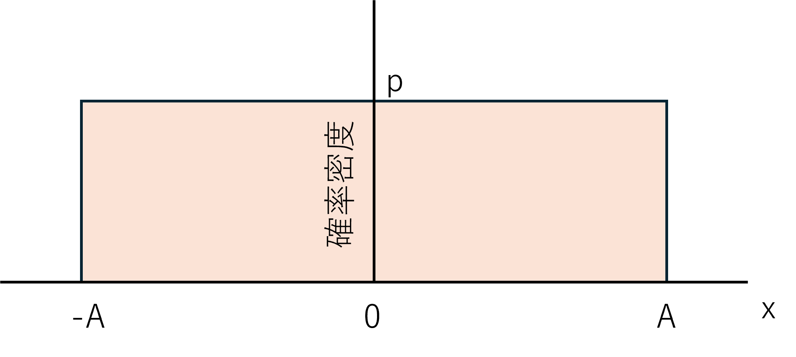
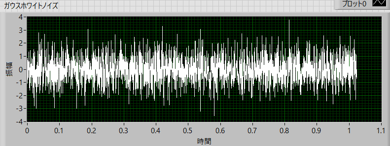
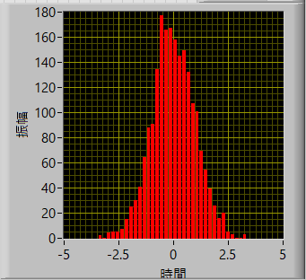
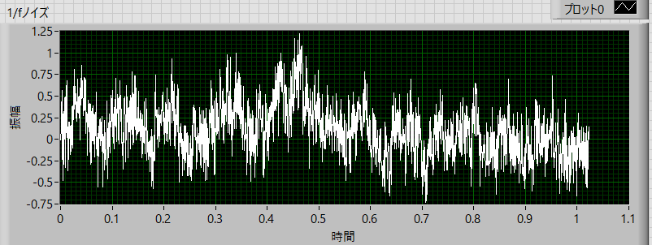

パワースペクトルの実際の作業内容-04
様々なゆらぎ波形
プログラムは，Labview (National Instruments)を使います．
有料で，生命科学の世界ではメジャーではありませんが，長年親しんだプログラムなので．．．
いずれ，Pytyon．でも実装します．
ノイズ生成はいくつか用意されていて，
一様ホワイトノイズ

ガウスホワイトノイズ

逆ｆノイズ波形（ピンクノイズ，ブラウニアンノイズ）

などあります．
・一様ホワイトノイズ
サンプル（サンプル数）：2048
標準偏差 ：1
dt（このアイコン内での設定ではないですが） ： 0.5 ms
で生成すると，

という，-1から１まで一様な分布のノイズを生成することができます．実際にヒストグラムをとると，

のように，ほぼ一様となります．
この分布の分散は，ーAからAまでの分布を考えると，

のようになります．縦軸の値，ｐ，は，全面積が１で規格化されているので，
\(\Large \displaystyle １= 2 \times A \times p \)
\(\Large \displaystyle p = \frac{1}{2 \times A } \)
となります．
分散は（平均が０なので），
\(\Large \displaystyle Variance = \int_{-A}^{A} \frac{1}{2 \times A } \ x^2 dt \)
\(\Large \displaystyle \hspace{48 pt} = \frac{1}{2 A } \left[ \frac{x^3}{3} \right]_{-A}^A \)
\(\Large \displaystyle \hspace{48 pt} = \frac{1}{2 A } \frac{2 A^3}{3} \)
\(\Large \displaystyle \hspace{48 pt} = \frac{ A^2}{3} \)
となります．
実際に，振幅，A=1，の場合には，実際のデータから分散を求めると，0.33，となり，理論通りであることがわかります．
・ガウスホワイトノイズ
サンプル（サンプル数）：2048
標準偏差 ：1
dt（このアイコン内での設定ではないですが） ： 0.5 ms
で生成すると，

という，標準偏差１のガウス分布のノイズを生成することができます．実際にヒストグラムをとると，

のように，ほぼガウス分布となります．
・逆ｆノイズ波形
1/ｆノイズ（ピンクノイズ）を生成するために，
サンプル（サンプル数） ：2048
ノイズ密度（これはよくわかりません．．．） ：0.1
指数（たぶん，f^(-n)のｎのこと） ： 1
dt（このアイコン内での設定ではないですが） ： 0.5 ms
として生成すると，

という波形を生成できます．
次ページに，上記のゆらぎのパワースペクトルを計算してみましょう．